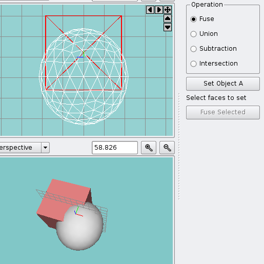
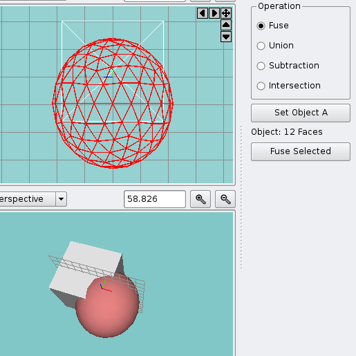
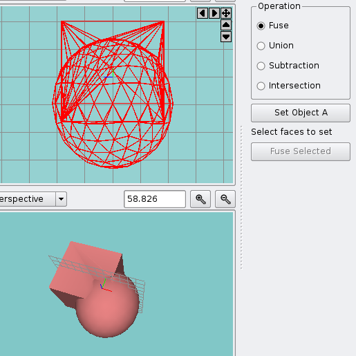
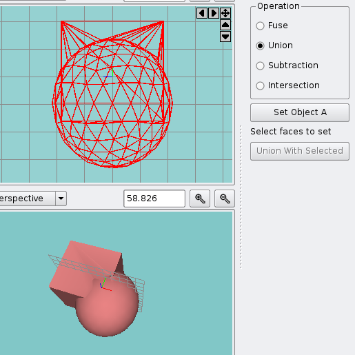
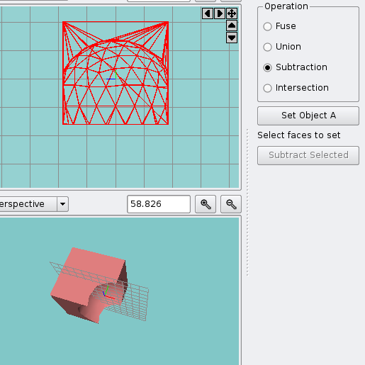
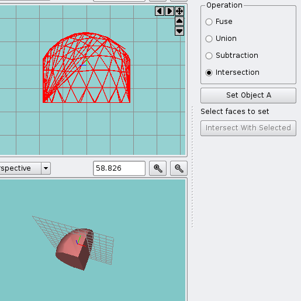

The Boolean Operation Window is a dockable window that allows you to combine two mesh objects into a single object. Open the Boolean Operation Window by selecting "Model | Boolean Operation..." The supported operations are listed below.
| 
Select Object A |

Select Object B |
| 
Fuse |

Union |
| 
Subtraction |

Intersection |
For the union, intersection, and subtraction operations to work properly, all meshes involved must be enclosed (otherwise the behavior of the face-removal step is undefined). If the meshes are not enclosed you can still use the fuse operation and manually remove the faces that must be removed.
To peform a boolean operation, select an enclosed mesh and then click Set Object A. Then select another enclosed mesh and click [op] With Selected where [op] is the name of the selected operation (the button name changes when you select an operation).
After using a boolean operation you may want to use Simplify Mesh to combine some newly created faces.